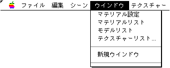
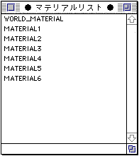
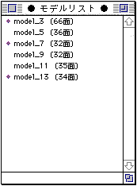
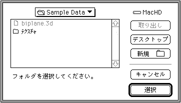
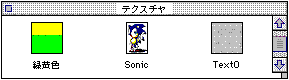

★Graphic Tools Guide
★3Dエディタユーザーズマニュアル
★Graphic Tools Guide
★3Dエディタユーザーズマニュアル
▲
戻る｜
進む▼
3Dエディタユーザーズマニュアル/2.使用方法
■ウインドウメニュー

●マテリアル設定
- マテリアルの設定ウインドウの表示オン／オフを行うトグルメニューです。マテリアルの設定ウインドウが他のメニューに隠れている場合には、すでに表示されていても、表示されていなくてもこのメニューが選択された場合一番表に現われてきます。
●マテリアルリスト
- マテリアルリストウインドウの表示オン／オフを行うトグルメニューです。

- マテリアルリストウインドウは現在表示されているシーンファイル内の全マテリアル名をリスト表示します。
各マテリアル名をダブルクリックすると、シーンウインドウ内でポリゴン選択ツールによって選択されているポリゴンのマテリアルを変更できます。
また、シーンウインドウ内でポリゴン選択ツールを使用する際に、shift＋クリックを行うと複数のポリゴンを選択することが可能です。
これによって複数選択されているポリゴンに対し、一括して１つの同じマテリアルを貼り付けることができます。
●モデルリスト
- モデルリストウインドウの表示オン／オフを行うトグルメニューです。

- モデルリストウインドウは現在表示されているシーンファイル内の全モデル名をリスト表示します。
各モデル名をダブルクリックするとそのモデルの表示／非表示が切り替わります。
また、shift＋クリックによってモデルを選択すると複数のモデルの選択が可能です。
これによって複数選択されているモデル名モデルに対し、一括して表示／非表示状態を切り替えることができます。
●テクスチャーリスト
- 下記のオープンダイアログを表示しますので、開いておきたいテクスチャの保存されているフォルダーを選択してください。

- テクスチャは下記のようなリストウインドウに表示されます。マテリアル設定時に、このウインドウからドラッグ＆ドロップでテクスチャを張り付けることができます。
リスト上にはフォルダに表示されるアイコンを使用しますのでファイルにカスタムアイコンを付加しておくと見やすくなります。
このウインドウ上でダブルクリックすれば、テクスチャーウインドウを開いて、テクスチャを見ることができます。

●新規ウインドウ
- １つのファイルの立体画像を見る場合、いろいろな方向から参照することができるように別ウインドウを開くことができます。
●ウインドウリスト
- 新規ウインドウメニューの下には現在表示されているウインドウの一覧が現われます。このメニューで選ばれたウインドウが最前面に出てきます。
▲
戻る｜
進む▼
★Graphic Tools Guide
★3Dエディタユーザーズマニュアル
Copyright SEGA ENTERPRISES, LTD., 1997